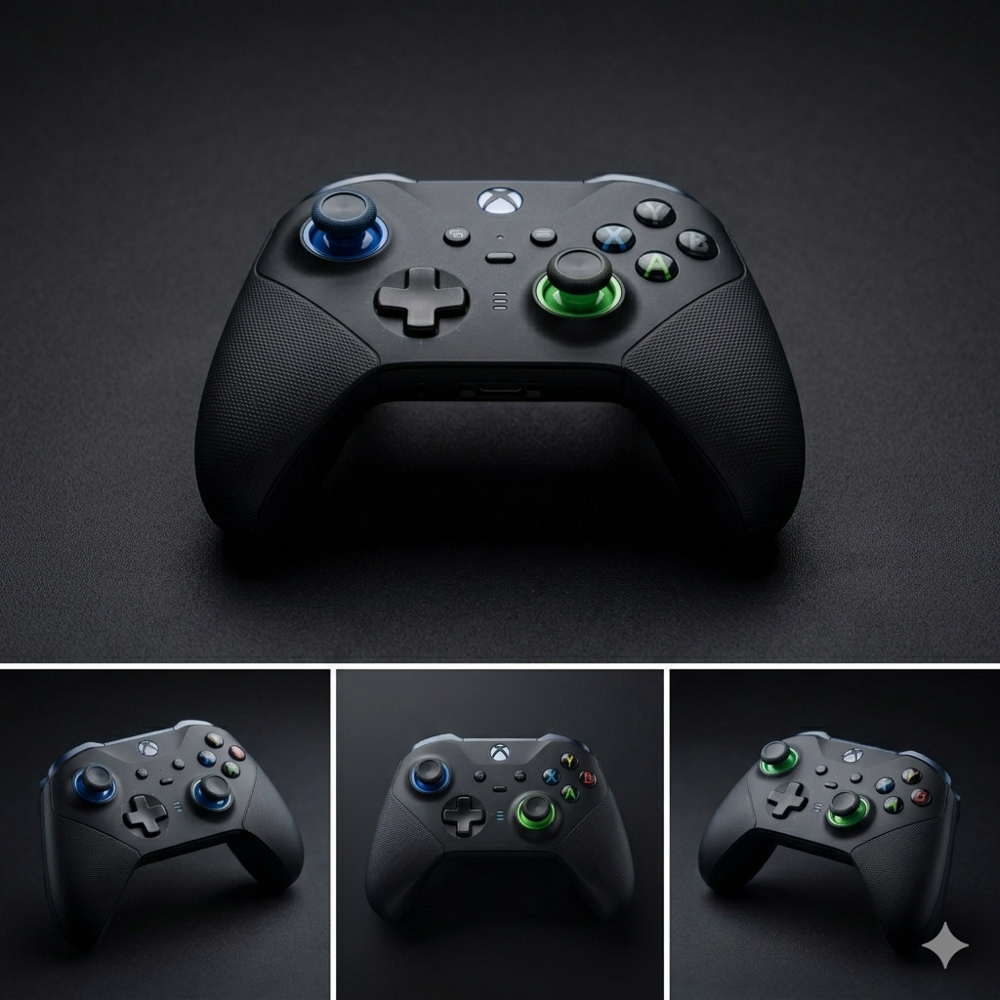
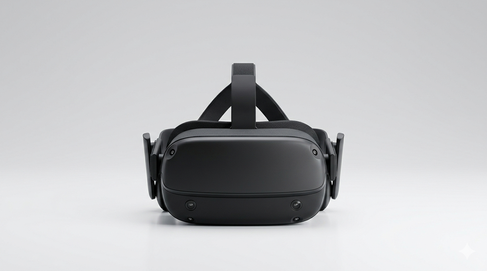

GTA VI: El tráiler que rompió internet
El tráiler de GTA VI ha generado una gran cantidad de atención en las redes sociales, con muchos usuarios expresando su entusiasmo por el nuevo título de Rockstar Games.
Leer MásEl tráiler de GTA VI ha generado una gran cantidad de atención en las redes sociales, con muchos usuarios expresando su entusiasmo por el nuevo título de Rockstar Games.
Leer MásOpenAI presenta Sora, su nuevo modelo capaz de generar escenas realistar de hasta de un minuto.
Leer MásEl precio del oro ha alcanzado niveles históricos, impulsado por la incertidumbre económica y la demanda de refugios seguros.
Leer Más
Descubre los títulos que están por llegar y que prometen ser los mejores del año 2026.
Leer MásEl rover encuentra nuevas pistas...
Analizamos los proyectores antiguos...

La VR está permitiendo las oficinas digitales...